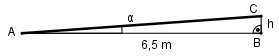

Aufgabe 132 Eine Straße hat eine Querneigung von 2,5%, damit Regenwasser besser abfließen kann. Um wie viel mm ist sie bei einer Breite von 6,5 m am Rand angestiegen?

Steigung von 2,5% bedeutet: 2,5 tan α = ----- = 0,025 100 Dreieck AbC : h tan α = -------- |*6,5 m 6,5 m tan α * 6,5 m = h h = 0,025 * 6,5 m = 0,1635 m = 163,5 mm